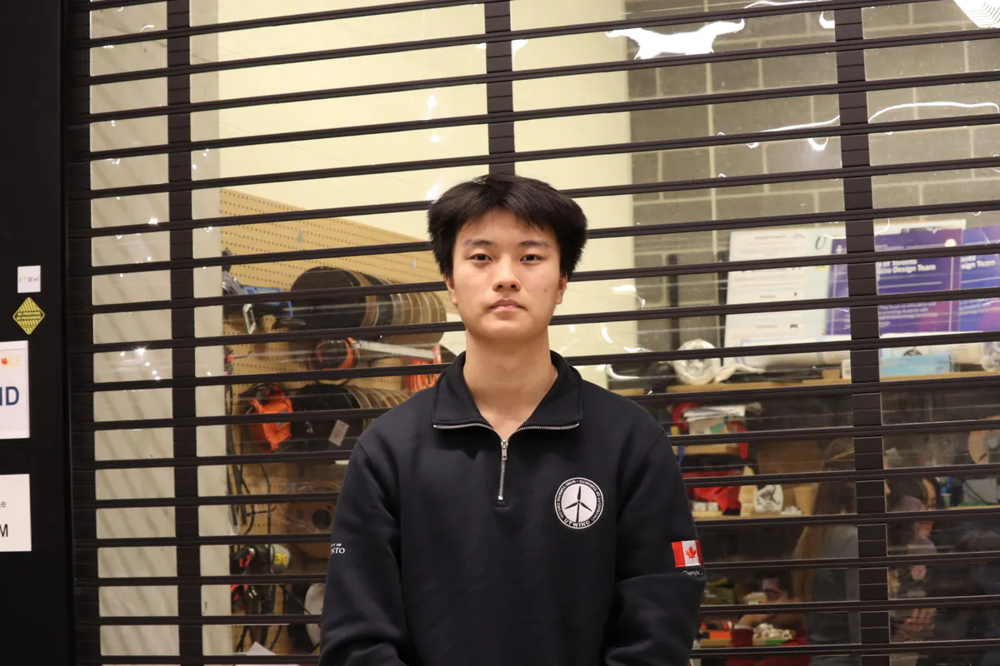
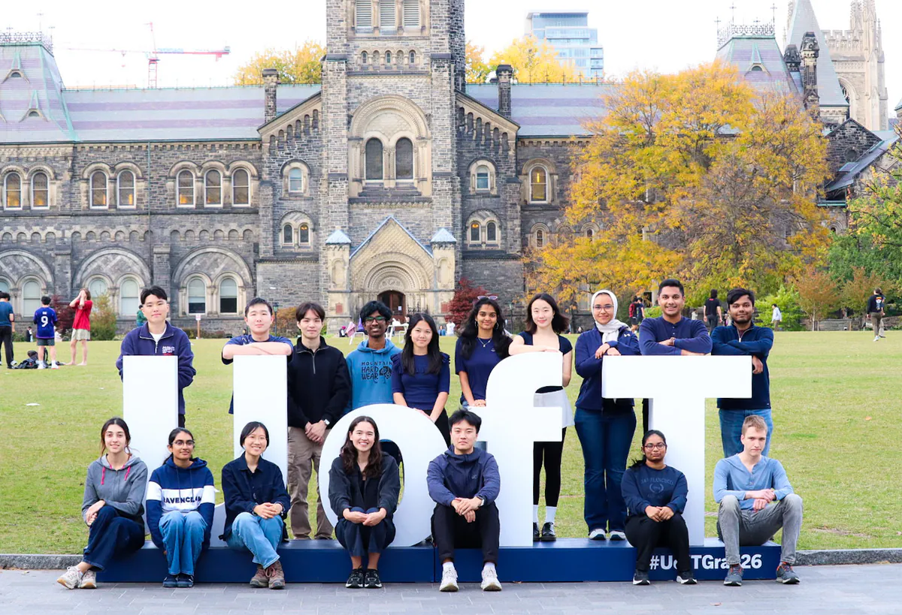
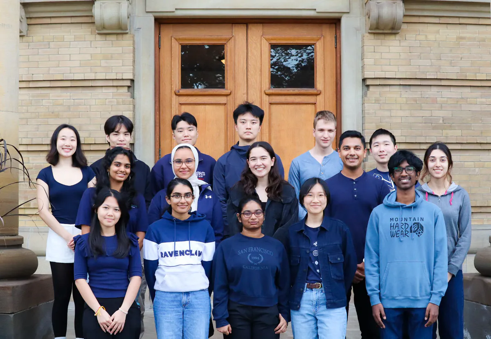

10Experience
Where I've Worked
Research, engineering, consulting and leadership roles, with what I did in each and the tools I used.


University of Toronto Wind Turbine Design Team
Toronto and the Netherlands·Design Team
Aug 2026 – Present
Team Captain
- Leading the design and integration of our 2026–2027 vertical-axis turbine with 100+ members across 6 departments and a 35-person leadership team, and managing a $50,000+ operating budget.
- Managing the full design, manufacturing and testing timeline toward the 2027 International Small Wind Turbine Contest.
- Grew the operating budget by over 115% year over year by building a sponsorship team that brought in new sponsors and partners on top of existing grants.
- Introduced an active pitch control system to improve efficiency and self-starting, and oversaw the development of its actuator-driven swashplate mechanism for cyclic blade pitch, guiding the pitch control team through design, manufacturing, and Ansys FEA and CFD validation.
- Directed projects across all departments, including QBlade and Ansys CFD airfoil selection, maximum power point tracking power electronics, printed circuit board design and manufacturing, and a bat-detection wildlife monitoring system.
- Took the team's sustainability work beyond recycling plastic bottles into PETG filament by introducing algae- and wood-based printing materials.
- Expanded the business team and built industry partnerships through sponsorship outreach, advertising campaigns and networking events.
- Established tool- and resource-sharing partnership agreements with University of Toronto Blue Sky Solar Racing and the University of Toronto Robotics Association.
- Restructured leadership roles and recruitment strategy, raising fall recruitment activity by 55% year over year.



Sep 2025 – Aug 2026
Mechanical Team Member
- Prototyped modular actuator and turbine-shaft braking subsystems using SolidWorks and Fused deposition modelling 3D printing.
- Co-authored and presented our design report at the 2026 International Small Wind Turbine Contest.
- Assembled and wind-tunnel tested the turbine at Delft University of Technology, where it reached a cut-in wind speed of 4 m/s.


University of Toronto Consulting Association
Toronto, Ontario·Club
Aug 2026 – Present
Associate Consultant
- Researching the market and competitors for a client over a semester-long engagement to shape our team's strategic recommendations.
- Building the supporting analysis and presenting findings to the client with the engagement team.

Toronto, Ontario
May 2026 – Aug 2026·Full-Time Internship
Undergraduate Research Intern, Hub for Advancing Buildings
- Automated the processing of field data from occupied high-rise apartments in Python (Pandas, NumPy), analyzing tracer-gas decay, differential-pressure and elevator data to model outdoor air delivery and airflow between units.
- Developed a custom Fitbit OS clock face and companion app in JavaScript and HTML/CSS that automated ecological momentary assessment surveys and comma-separated values export for a multi-summer heat-exposure study.
- Built a Python pipeline that trained and ranked Proximal Policy Optimization reinforcement learning agents for building cooling control on a Slurm-managed high-performance computing cluster and identified the best configuration for each chiller and thermal model pairing.
Engineering Student Societies' Council of Ontario
Toronto, Ontario·Club
May 2026 – Present
Vice President of Competitions, Ontario Engineering Competition 2028
- Leading 20 competition directors alongside two co-vice presidents to develop 9 engineering competitions for the Ontario Engineering Competition 2028, an annual event that will bring 350+ students from 19 Ontario universities to the University of Toronto in January 2028.

University of Toronto Engineering Kompetitions
Toronto, Ontario·Club
Mar 2026 – Present
Junior Design Director
- Designed and organized a hardware engineering competition for 230+ first- and second-year engineering students at the University of Toronto.

University of Toronto Engineering Students Consulting Association
Toronto, Ontario·Club
Jul 2026 – Present
Consulting Engineering Projects Director
- Leading a 7-person pro bono consulting team through a semester-long engagement with a software industry client, scoping requirements and setting the project plan and timeline.
- Overseeing development of a cloud-based software prototype, coordinating roles across mobile, backend, data security and real-time integration.
- Managing client relations and weekly team meetings, translating client requirements into deliverables for the final software and technical documentation.
Oct 2025 – Apr 2026
Engineering Student Consultant, Finliti Product Development
- Engineered a card dealer and discard unit for Finliti in Autodesk Fusion that cut its footprint by 30% to 90 × 100 mm while keeping a 160-card capacity. It passed a 15° tilt test and met 100% of the client's key performance indicators.
- Developed a Fused deposition modelling 3D printing manufacturing plan that kept unit cost below 35% of retail price, using a gravity-weighted mechanism to keep the part count and assembly simple.

SnowScape Landscaping
Calgary, Alberta
Jun 2022 – May 2025·Self-Employed
Founder & Owner
- Generated $28,000+ in net profit across projects for 100+ clients by making the most of crew time, equipment and materials.
- Built a 39% repeat-client rate over 3 years by leading a crew of 10+ that tailored each job to the client and held to strict quality standards.